UMG, Referencing UMG Widgets in Code
Contents
Overview: (Tested in 4.7.5)
Author:
(
)
This is my first contribution to the Unreal awesome community I hope you find it useful especially for newcomers. While I am coding in C++ I always keep in mind that I am not working alone in the project and there is some people is doing stuff with me and I need to use their content in the project.
Here is the situation:
An artist is working on the UI using UMG and he made some fancy Widget And now it comes the part where I need to create this widget in C++ and have reference for it so I can use it in future.
The next part of this post will cover:
-
How to Make a UMG widget blueprint in the Editor.
-
Create and add to viewport using C++.
-
Have a reference to it in a Variable for future use.
-
Add the widget to the viewport.
Prepare Project:
First lets create new blank project based on C++ and call it whatever you like.
Then make this folder hierarchy:
-
Content Folder.
-
Maps Folder -> Create new Blank Map.
-
Blueprints Folder -> Widgets Folder.
1. Create New Map:
Create new blank map and I called mine "MainMenu" and don't forget to save it.
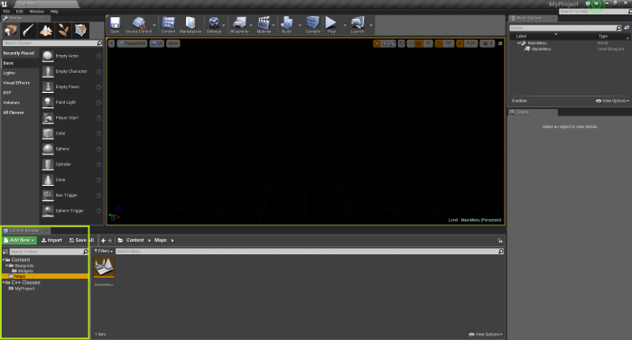
2. Create C++ PlayerController Class:
Go To C++ Classes Folder->MyProject
And Create new C++ PlayerController Class Call it “MyPlayerController”
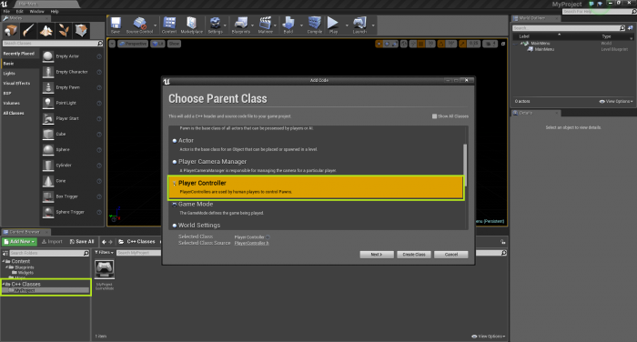
3. Create UMG Widget:
Now Go to Blueprints Folder -> Widgets Folder. And create new Widget Blueprint Call it “MainMenu”.
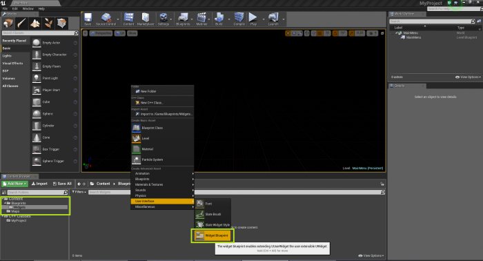
Open the “MainMenu” widget and let's make a button Called “QuitBTN”
then assign onClicked Event
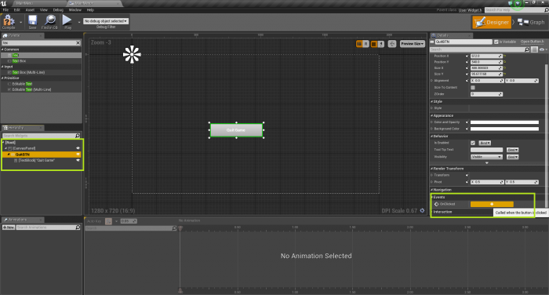
and do the following
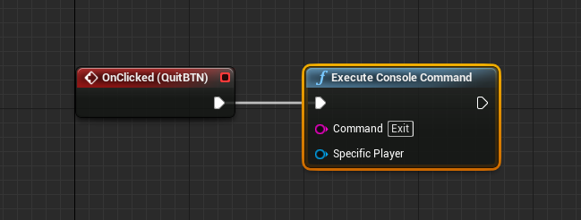
now we have ready widget with a button that exit the game on clicked using Blueprints.
4. Create GameMode and PlayerController Blueprints:
We need to create 2 more Blueprints and we are done from the editor for now.
-
Create Game Mode Blueprint “BP_GameMode” Based on ProjectNameGameMode.
-
Create Player Controller Blueprint “BP_PlayerController” Based on PlayerController Class we created earlier.
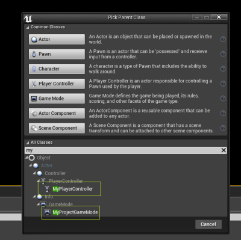
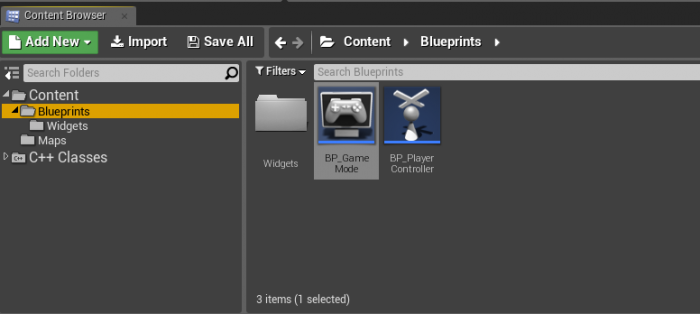
Visual Studio:
1. Adding Modules:
in order to use UMG in C++ you need to Add the following Modules in ProjectNameBuild.CS file
"UMG", "Slate", "SlateCore
In this line:
//ProjectNameBuild.CS
PublicDependencyModuleNames.AddRange(new string[] { "Core", "CoreUObject", "Engine", "InputCore", "UMG", "Slate", "SlateCore" });
2. PlayerController:
Open your MyPlayerController.h
and we will make some variables and overriding the BeginPlay() function.
PS: Better to add our widget reference to a
.
//MyPlayerController.h
UCLASS()
class MYPROJECT_API AMyPlayerController : public APlayerController
{
GENERATED_BODY()
public:
// Note: that I am using forward declaration Because I am not including the
// widget in the header and to prevent circular dependency.
// You don't need to do that if you include the Widget Class in the .h
// Forward declaration is just putting "class" before the class name so the compiler know it's a
// class but it's not included in the header and don't freak out. Ex. “class UUserWidget”
// Reference UMG Asset in the Editor
UPROPERTY(EditAnywhere, BlueprintReadWrite, Category = "Widgets")
TSubclassOf<class UUserWidget> wMainMenu;
// Variable to hold the widget After Creating it.
UUserWidget* MyMainMenu;
// Override BeginPlay()
virtual void BeginPlay() override;
};
open your MyPlayerController.cpp
include this file to your cpp
//MyPlayerController.cpp
// include
#include "Blueprint/UserWidget.h"
BeginPlay() Function
//MyPlayerController.cpp
void AMyPlayerController::BeginPlay()
{
Super::BeginPlay();
if (wMainMenu) // Check if the Asset is assigned in the blueprint.
{
// Create the widget and store it.
MyMainMenu = CreateWidget<UUserWidget>(this, wMainMenu);
// now you can use the widget directly since you have a referance for it.
// Extra check to make sure the pointer holds the widget.
if (MyMainMenu)
{
//let add it to the view port
MyMainMenu->AddToViewport();
}
//Show the Cursor.
bShowMouseCursor = true;
}
}
Testing
Now Open the Editor and Go to world Setting and assign our BP_GameMode As the Current Game Mode for the Level.
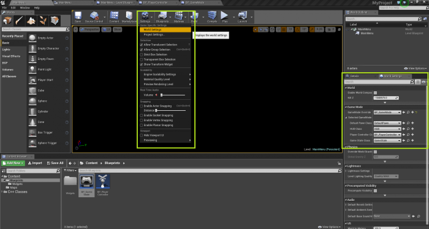
and use our early created “BP_PlayerController” As the Active Controller.
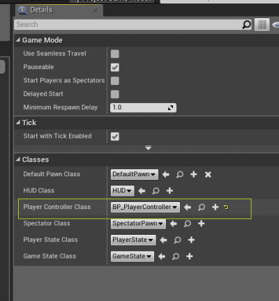
Open the “BP_PlayerController” and Assign the widget.
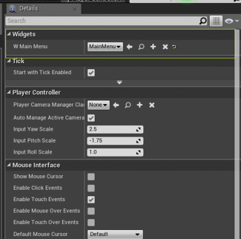
Press Play and Hurrray we have our Menu Shown.
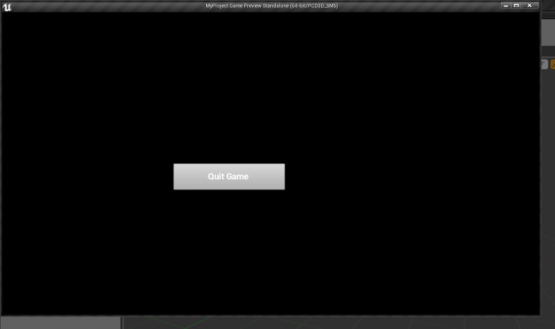
Conclusion
Now we are done and you have a working widget that you can control from C++ Code you can add more functionality and control your menu flow from code whenever you need.
From here you can extend your UMG Widgets the same way following this awesome tutorial By WCode:
Posted By ( )